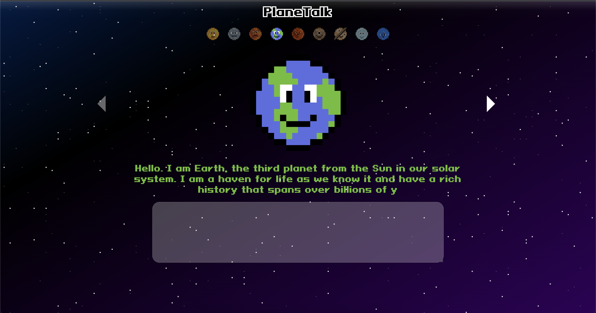
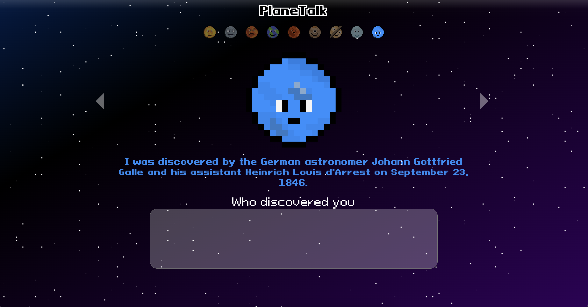

PlaneTalk
GitHub | Last Updated September 24,
2023

PlaneTalk
Planetalk allows you to chat with the sun or any planet in our system using the power of OpenAI's GPT3.5. You
can ask it any from planet composition to the history of its discovery. Explore and learn about our solar
system
in a personal way, choose from 1 from 5 education levels to get varying levels of complexity.
Our web application was built using Django for our backend, OpenAI's GPT3.5-turbo for large language model
integration, and React and JavaScript for our frontend experience.
#React #GPT3.5 #Django #Python #JavaScript #HTML #CSS
Photos
